项目概述
VR Dunhuang 是一款面向 Meta Quest 的 Unity VR 探索游戏，没有传统的胜负条件，目标是让玩家通过与艺术品的互动理解和体验敦煌艺术。游戏虚拟重建了三件经典作品：九色鹿本生、金刚经变和莫高窟 302 窟的倒塔中心柱。玩家先在写实复现的洞窟里挑选一件作品，用手抓起它放到指定位置，就会进入这件作品“想象出来的”场景；每个场景都有独特的交互元素，解锁更多关于作品的信息和文化故事。
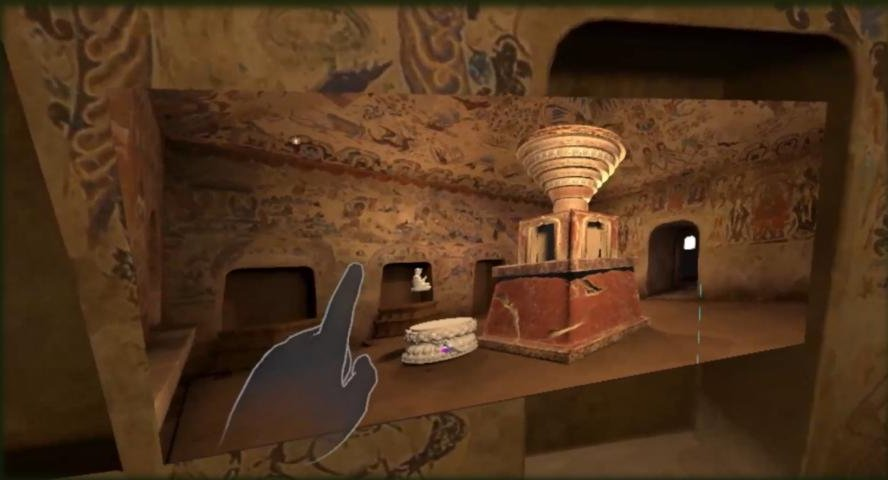
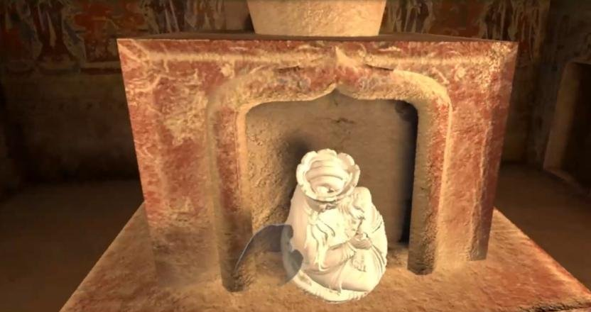
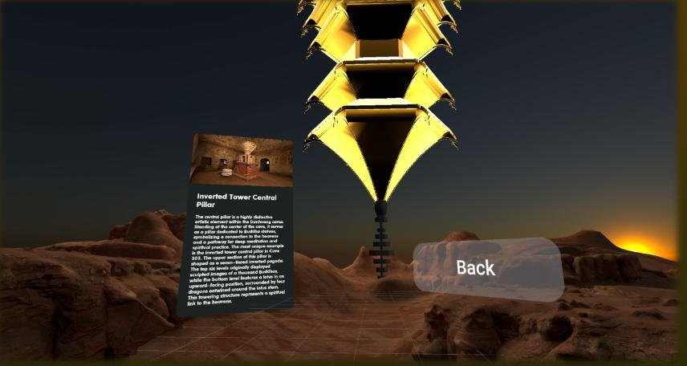
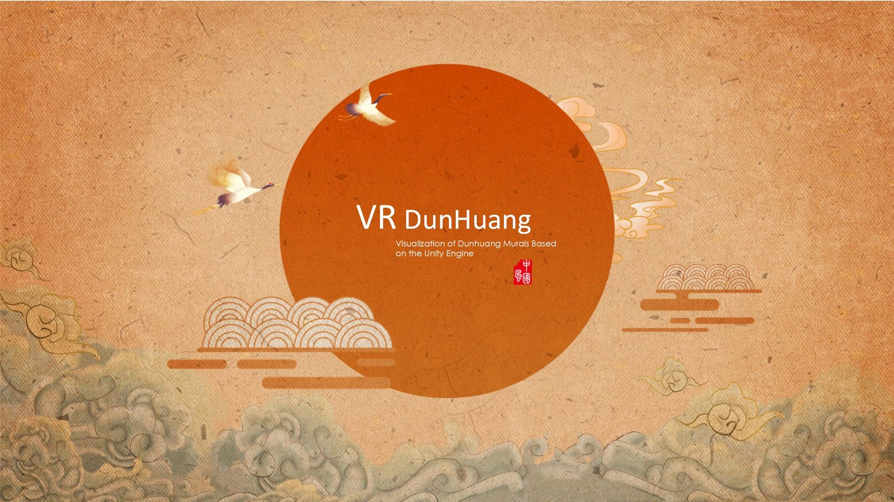
三个想象场景
洞窟采用写实风格忠实还原壁画细节；作品内部的想象场景则采用绘画风格，把壁画里的关键元素——九色鹿与层叠的山、金刚经变里的佛与山水——变成可以走进去的三维空间。
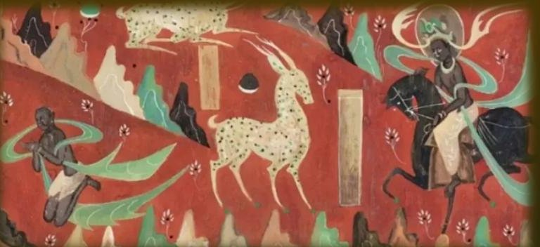
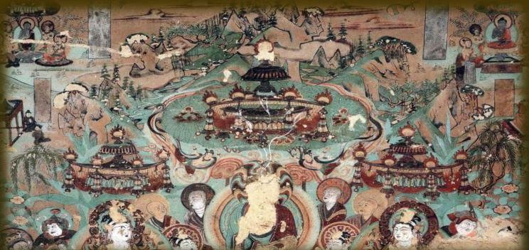
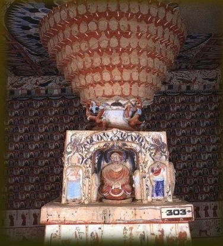
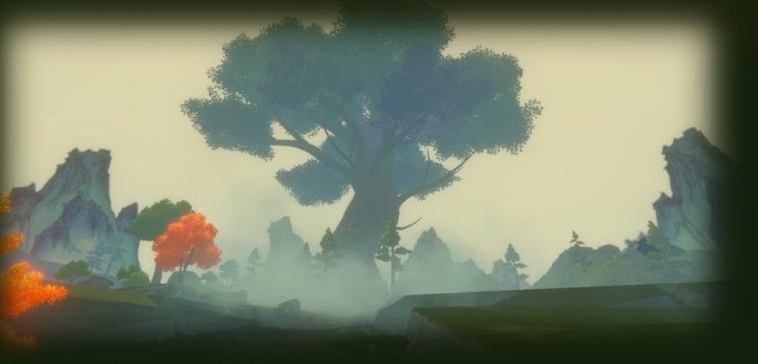
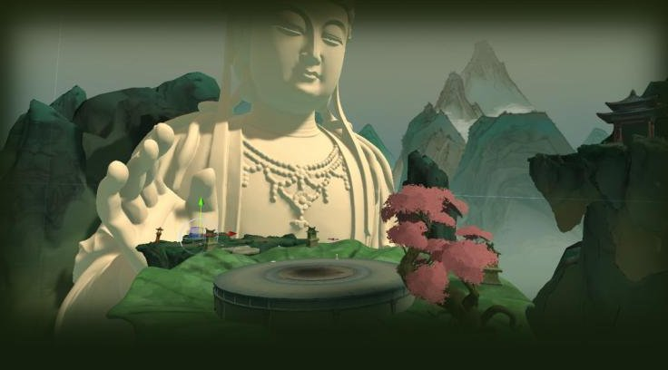
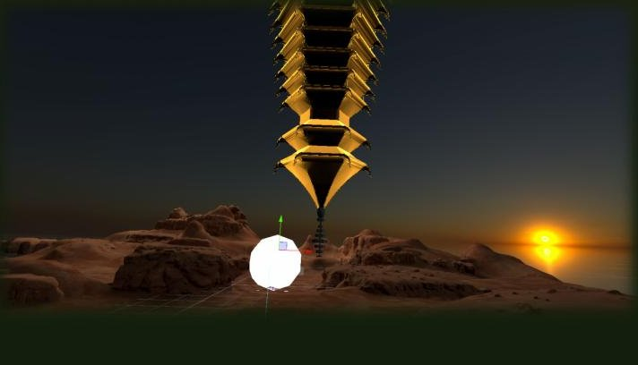
上：原作；下：游戏中对应的想象场景。
手势交互：我的工作
游戏的交互全部基于 Oculus 的手部追踪手势识别，这是整个项目最大的技术挑战，也是我负责的核心部分：
- 手势控制系统：用手直接抓取艺术品并放置到指定位置；用手指点选 UI（例如 Back 按钮）。给手加上 Grabber、给物体加上 Grabbable 组件并设定抓取手势；抓取功能做成独立的子物体以便维护。为了避免雕像在手里“漂浮”或者手像抓着空气，雕像没有用更省资源的 Cube Collider，而是用了贴合模型的碰撞体。
- 传送系统：用特定手势在场景间传送。传送逻辑分成两部分——挂在玩家身上发起交互的 Teleport Interactor，和挂在目标位置接收交互的 Teleport Interactable。
- 场景中的交互逻辑设计与实现。遇到的问题主要靠官方文档和示例工程解决。
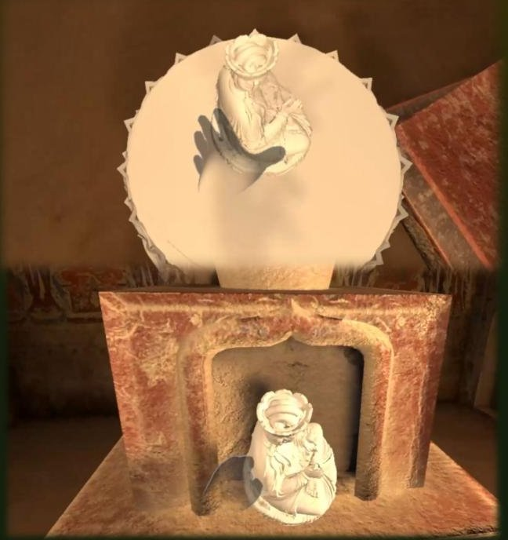
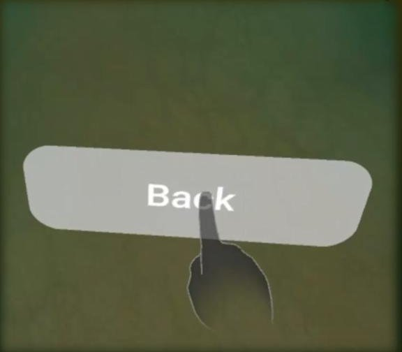
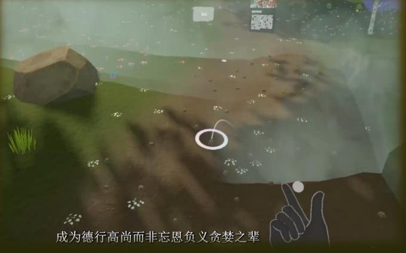
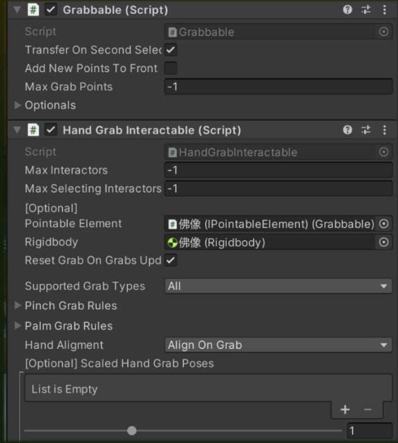
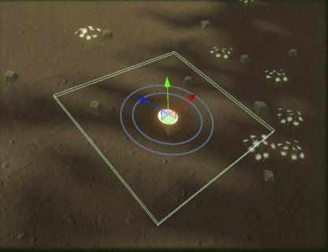
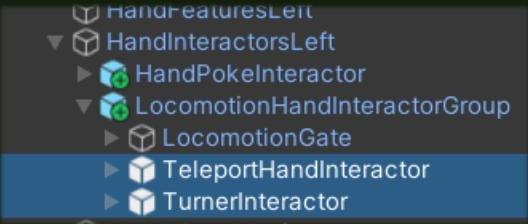
抓取与放置、手指点选、手势传送；Grabbable / HandGrabInteractable 组件配置、传送目标点、Hand Interactor 层级。
分工与回顾
我负责
- 手势追踪交互（抓取、点选、传送）
- 场景中的交互逻辑设计与实现
团队其他成员负责
- 场景规划、白盒与美术搭建
- 三维模型与贴图（中心柱从白模到完成）
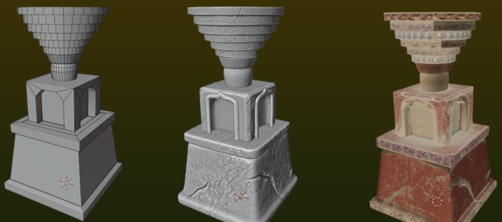
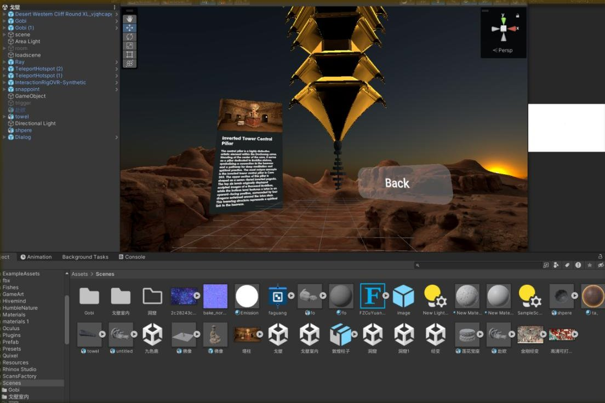
团队分成交互设计和美术设计两部分，从场景规划和白盒开始，逐步用模型和细节填满每个场景。这个项目让我学会了用官方文档和示例工程解决实际问题，尤其是手势控制和 VR 交互，也加深了我对 VR 交互设计的理解。